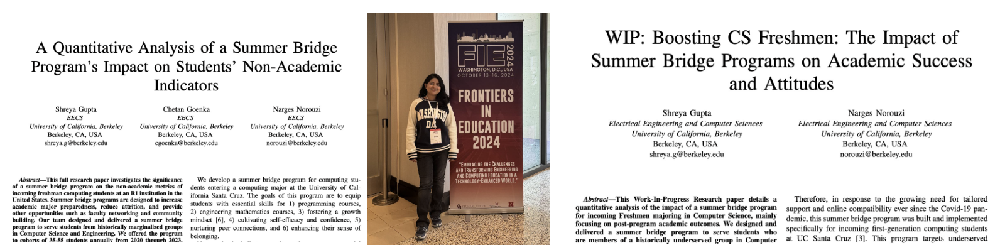

B.A. Computer Science, (Hons) B.A. Data Science
UC Berkeley 2025
Paper 1 & Honors Thesis: These studies use data science techniques to statistically prove how bridge programs boost critical non-academic indicators such as STEM belonging, social confidence, and resource awareness, empowering underrepresented computing students for success.
Paper 2: This research proves the transformative impact of bridge programs in leveling the playing field for underserved computing students by fostering persistence and creating academic pathways to equitable STEM opportunities.
As part of CDSS' Student Advisory Board, I lead bimonthly strategic meetings with Leadership at CDSS, shaping critical college policies on outreach, admissions, peer advising, club recruitment, professional development, and aspirations for alumni experience.
I'm also the student representative for CDSS' Undergraduate Study Committee, contributing to policy development for fair admissions and academic accessibility.
Teaching kids in underprivileged areas. I believe in sharing knowledge and opportunities.
For the past two years, I’ve had the privilege of teaching Data100 - Principles & Techniques of Data Science at UC Berkeley. As the largest upper-division computer science course (with >1000 students each semester), it’s also one of the most loved! 😄 Every discussion I lead is an opportunity to connect with students and inspire their passion for data science.
I take a pic of the class before my 1st discussion every sem—capturing the energy and impact I hope to leave behind. So far, I’ve taught 5 discussions, working directly with over 200 students, and done my best to help them fall in love with numbers, programming, and the stories data can tell.
On the right, you’ll find some of these photos, alongside a subset of comments from my students that mean the world to me and have helped me improve as an instructor.
Click the title to access all my teaching materials.
Hover over a role to learn more about my experiences!
(as you can see, almost everything)
No, I’m not Joe Goldberg, but your organization is definitely my next big project. Let me tell you why.
I’m standing right at the intersection of leadership and innovation, turning complex challenges into impactful solutions. Whether it’s leading teams as a Head TA or driving AI-powered initiatives, I bring a proactive, results-oriented mindset and the technical expertise + versatility you need! My adaptability, communication skills, and love for learning mean I don’t just meet expectations- I exceed them.
So pick me, choose me, hire me if you’re looking for someone who leads with purpose, learns with passion, and builds with precision.
PS: I love analyzing TV shows. References in this page are from "Grey's Anatomy" and "You" on Netflix.
This is me—a sum of all my parts. Not just a programmer, but a dynamic and driven individual ready to make your team’s mission my new mission.
When equitable education became my mission, I followed through for over 10 years (and still continue to), just like my tennis serve: focused and consistent.
And because I value a collaborative work environment, I’m dedicated to creating spaces that bring people together. From organizing karaoke nights
(yes, I love singing and playing the guitar!) to hosting chai-tasting sessions, I will bring the energy that keeps teams connected both in and outside the workplace.